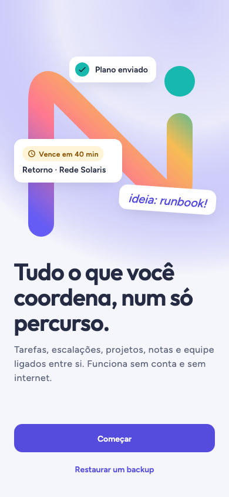
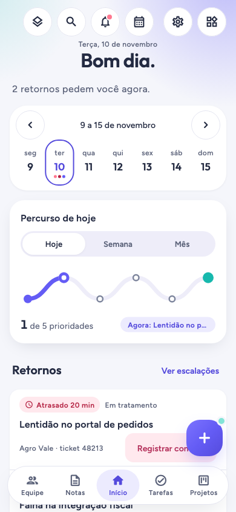
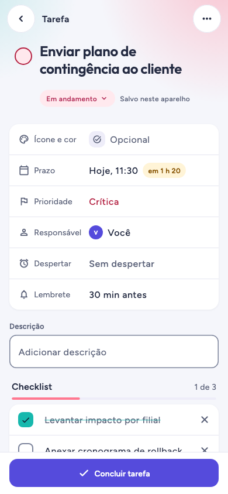
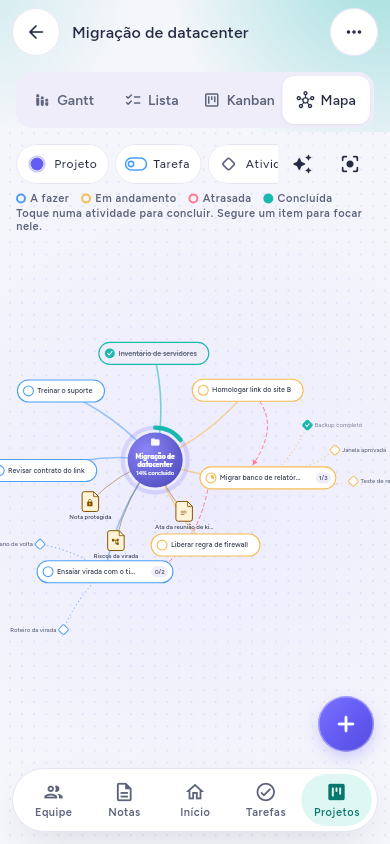
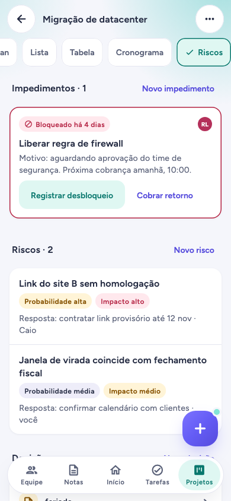
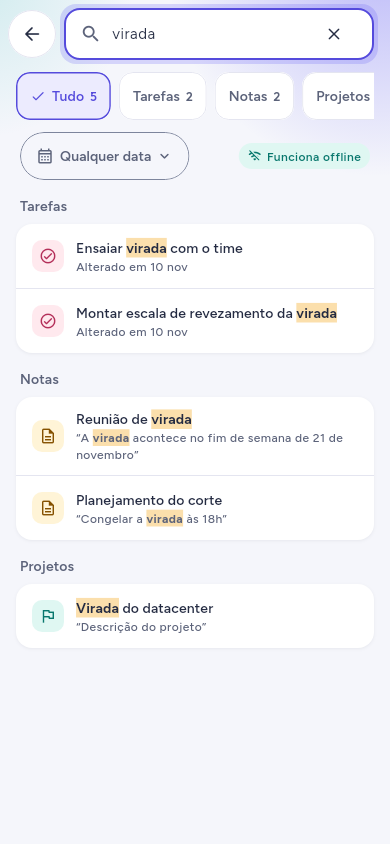

Índice
Nuvii reúne en una sola app lo que suele estar repartido entre la lista de tareas, el tablero de proyectos, el calendario, el cuaderno de notas y las hojas de cálculo, y vincula cada información con la siguiente acción. Es una app individual: todo es tuyo, y las personas del área Equipo son contactos a los que das seguimiento, no cuentas de otros usuarios.
Este manual recorre todas las pantallas en el orden en que las encuentras. Las capturas usan datos ficticios, están en portugués y pueden mostrar detalles de versiones anteriores.
Los elementos marcados con en cambio se modificaron el 27 y el 28/11/2026 y aún pueden cambiar.
1. Primer acceso

El primer acceso lleva unos dos minutos, y casi todo se puede saltar.
| Pantalla | Para qué sirve |
|---|---|
| Apertura | Muestra la marca mientras la app prepara la base de datos cifrada en el dispositivo. |
| Entrar | Acceso con la cuenta de Google o Apple. La cuenta guarda tu acceso y conecta Nuvii en el móvil, la tableta y el navegador. |
| Bienvenida | Presenta la app. Tiene Empezar y la opción de restaurar una copia de seguridad. |
| Beneficios | Tres tarjetas animadas: capturar en segundos, no olvidar ningún seguimiento y escribir a tu manera. Saltar va directo al perfil. |
| Tu perfil | Solo el nombre es obligatorio. Nacimiento, CPF (documento fiscal de Brasil), sexo, correo y teléfono son opcionales y se quedan en el dispositivo. |
| Inteligencia artificial | Aparece solo cuando el dispositivo tiene IA propia. Eliges usar la IA del dispositivo (nada sale de él) o seguir sin IA, que es lo predeterminado. |
| Biometría | Pregunta si Nuvii debe pedir Face ID, huella o el código del dispositivo al abrir. Se puede cambiar luego en Ajustes > Seguridad. |
| Sincronizar dispositivo | Invita a traer datos de otro dispositivo por la sincronización. |
| Restaurar copia | Abre un archivo .nuvii con su contraseña. Solo funciona en una instalación limpia. |
| Primeros pasos | Guía de tres minutos: qué pesa más en tu día, importar una lista pegando texto (cada línea se vuelve tarea), capturar una tarea como hablas y activar dos rituales (resumen de la mañana a las 8 h y revisión del viernes a las 16 h, como máximo 2 avisos al día). |
Bloqueo. Con el bloqueo activado, Nuvii abre en la pantalla "Nuvii bloqueado" y pide biometría o el código del dispositivo. Vuelve a pedirlo tras el tiempo en segundo plano que elijas.
2. Cómo navegar

Isla de navegación. Abajo están las cinco áreas, en este orden: Equipo, Notas, Inicio, Tareas y Proyectos. Cada área recuerda dónde estabas.
Barra superior. Es la misma en todas las áreas y no se desplaza: título del área, búsqueda, conversaciones, campana de notificaciones y tu perfil, que lleva a Ajustes. Lo propio de cada área (contexto, filtros, papelera, contactos) aparece como atajo al principio del contenido.
Botón de acción rápida (+). El botón morado abre un menú en abanico con hasta cinco atajos para crear: tarea, nota a mano, nota, priorización, proyecto, idea, hábito, mapa mental, tablero Kanban o hablar con el asistente. Ningún atajo es fijo: eliges cuáles y en qué orden en Ajustes > Botón de acción rápida en cambio. Mantener pulsado el botón abre el asistente de voz cuando hay IA configurada.
Contexto. Las áreas tienen el atajo de contexto: Todos, Personal o Trabajo. Filtra lo que ves; la elección vale solo en este dispositivo.
Pantallas de detalle. Una tarea, proyecto, nota o persona se abre sobre el área. En el móvil, la flecha vuelve atrás; en la tableta, el detalle se abre junto a la lista (ver la sección 11).
3. Inicio

Inicio responde "¿cuál es mi siguiente acción?". Arriba están la fecha, el saludo y una frase que resume el día, como "2 seguimientos te necesitan ahora".
Franja de días. Muestra la semana con puntos en los días que tienen elementos. Las flechas cambian de semana, y tocar un día abre el calendario.
Recorrido. Elige Hoy, Semana o Mes.
- Hoy: cada prioridad del día es un punto del camino; al completarla, el trazo avanza y muestra "Ahora:" con la siguiente.
- Semana: el progreso de cada día de la semana y cuántos seguimientos siguen abiertos.
- Mes: el calendario del mes; toca un día para ver qué hay en él.

Secciones que aparecen cuando hay datos (sin datos, la sección se oculta):
| Sección | Qué muestra |
|---|---|
| Seguimientos | Priorizaciones con seguimiento por vencer o vencido, con el atajo Registrar contacto. |
| Hoy | Tareas prioritarias del día. Puedes completarlas ahí mismo y fijar una tarea en Hoy. |
| Agenda | Las citas del día, incluidos los calendarios del dispositivo (Google, iCloud, Outlook) si los activaste. |
| Cumpleaños | Personas del Equipo que cumplen años. |
| Hábitos de hoy | Hábitos previstos para el día, para marcar con un toque. |
| Salud ahora | El sueño de anoche y los pasos de hoy, cuando Salud está activada. |
| Proyectos en foco | Proyectos en ejecución, con el próximo hito. |
| Actividades de proyectos | Cuántas actividades de proyectos están contigo, con el atajo Mis actividades en cambio. |
| Consejos del día | Sugerencias calculadas en el dispositivo, sin IA, como "Tienes 1 tarea atrasada". |
Empieza por aquí. Sin ningún dato, Inicio muestra cuatro atajos: crear la primera tarea, seguir una priorización, escribir una nota y abrir un proyecto.
Informe de la semana. Se abre desde los consejos y muestra tareas completadas y atrasadas, priorizaciones con contacto y eventos, comparados con la semana anterior. Todo se calcula en el dispositivo.
Calendario

Se abre desde la franja de días. Tiene las vistas Día, Semana (cuadrícula por horas) y Mes. Reúne vencimientos de tareas, seguimientos de priorizaciones, eventos de Nuvii, cumpleaños y, si están activados, los calendarios del dispositivo. Nuevo evento pide título, descripción opcional, día completo o inicio y fin.
4. Tareas

El área para capturar y ejecutar. Arriba están los filtros, que son vistas de las mismas tareas:
| Filtro | Qué muestra |
|---|---|
| Bandeja de entrada | Lo que capturaste sin fecha, para organizar después. |
| Hoy | El resumen del día (anillo de progreso, cuántas faltan y las atrasadas), luego las tareas del día y las atrasadas. |
| Próximas | Tareas con fecha futura, agrupadas por día, con el día más cargado marcado. |
| Priorizaciones | Seguimientos con cliente y plazo de respuesta (ver abajo). |
| Rutinas | Tareas que se repiten por día, semana o mes. |
| Hábitos | Tus hábitos y la marca del día. |
| Todas | Todo lo que creaste. |
Gestos. Desliza una tarea a la derecha para completarla y a la izquierda para posponerla un día. Siempre puedes Deshacer.
Checklist. Una tarea con elementos muestra el contador (por ejemplo, 2/5) y abre los elementos en la propia lista. Solo se completa con todos marcados; Nuvii ofrece "Marcar todos y completar".
Listas

Las listas son carpetas de tareas con el nombre que quieras: compras, deseos, metas. Están en una franja sobre las tareas.
- Nueva lista crea una lista; una lista puede tener listas dentro (un nivel).
- En la lista abierta, escribe en el campo superior y confirma para añadir un elemento tras otro.
- El menú de la lista tiene Editar, Nueva lista dentro, Archivar y Eliminar. Eliminar la lista no elimina las tareas.
- Cada proyecto tiene una lista automática con sus tareas.
Filtros y orden
El atajo Filtros abre la hoja "Filtros y orden": ordenar por vencimiento, prioridad, creación u orden manual (mantener y arrastrar); agrupar por día, proyecto o persona; mostrar completadas; prioridad mínima. Filtros guardados conservan combinaciones con nombre, como "Esperando a terceros".
Detalle de la tarea

| Campo | Cómo funciona |
|---|---|
| Título y descripción | Se editan en el sitio y se guardan solos. |
| Estado | Bandeja de entrada, Por hacer, En curso, En espera (pide el motivo) o Completada. |
| Vencimiento | Fecha y, si quieres, hora. |
| Prioridad | Crítica, Alta, Normal, Baja o sin prioridad. |
| Responsable | Tú o un nombre libre. |
| Recordatorio | A la hora, o 15 min, 30 min, 1 h o 1 día antes. |
| Despertador | Suena como alarma a la hora elegida, incluso en silencio. |
| Proyecto y lista | Vincula la tarea a un proyecto o la mueve a una lista. |
| Repetir | Crea una copia abierta de la tarea, con o sin fecha. |
| Checklist | Elementos que puedes marcar, desmarcar y quitar. |
| Historial | Todo lo que cambió en la tarea, con fecha y hora. |
En el menú están Pausar o Reanudar y Eliminar (va a la papelera y cancela el recordatorio).
Priorizaciones

Una priorización da seguimiento a un caso con cliente y plazo de respuesta, como un ticket crítico. La lista se ordena por el próximo seguimiento.
- Crear: desde el botón +, la priorización nace como borrador solo con el título. Completar seguimiento pide cliente, ticket, próxima acción y próximo seguimiento para activarla.
- Fases: Recibida, En triaje, En tratamiento, Monitoreo y Resuelta. Avanzar fase cambia la etapa.
- Tarjetas del detalle: fase, próxima respuesta (al día, vence en, atrasada), resolución prevista y próxima acción.
- Registrar contacto: canal (teléfono, WhatsApp, correo, reunión, chat, otro), resumen de lo acordado y el próximo seguimiento, que es obligatorio. Nuvii solo lo registra; no se envía nada al cliente.
- Posponer seguimiento pide el motivo. Reabrir pide la fase, el motivo y la próxima acción.
- Seguimiento: la línea de tiempo con todo lo que pasó.
Rutinas

Las rutinas generan una ocurrencia en cada repetición. La pantalla muestra Para hoy, Atrasadas y Todas las rutinas, con el conteo de la semana.
- Nueva rutina: título, repetición (diaria, días laborables, semanal con los días, mensual en un día fijo o el último día), intervalo, hora o día completo y fecha de inicio.
- En cada ocurrencia: Completar, Posponer (mañana, en 2 días, la próxima semana u otra fecha) o Saltar.
- Editar pregunta si vale para esta y las futuras o para toda la rutina. Terminar serie deja de generar ocurrencias y conserva el historial.
Hábitos

Los hábitos se marcan día a día. Cada uno tiene nombre, color, icono, fechas opcionales de inicio y fin y una meta. Con Salud activada, un hábito puede marcarse solo cuando se alcanza la meta de pasos, sueño o entrenamiento; Nuvii nunca lo desmarca. El detalle del hábito muestra la racha y el historial. Los hábitos archivados tienen su propia sección.
5. Proyectos

Proyectos es un planificador profesional que usa las mismas tareas del área Tareas.
Portafolio
- Crear e idear (Estudio): cuatro atajos arriba: Nuevo proyecto (desde cero), Plantillas, Con IA y Mejoras.
- Vistas: Lista o Kanban. En Kanban, arrastra un proyecto entre columnas; para cerrarlo, Nuvii pregunta si se completó o se canceló.
- Grupos: Activo y Pausado. Los completados aparecen en Entregas.
- Tarjeta del proyecto: estado, salud declarada (Sin evaluación, En plazo, En riesgo, Bloqueado), próximo hito y progreso por las tareas. Sin tareas, la tarjeta dice "Sin tareas", nunca 100 %.
- Mis actividades: lista las actividades de proyectos que están contigo (Conmigo) y las que delegaste (Delegado), con las atrasadas destacadas en cambio.

Plantillas. Cinco planes listos con hitos, tareas y riesgos: Lanzamiento de producto, Evento, Campaña de marketing, Mejora de proceso y Estudio o certificación. Elige una, ponle nombre y crea; todo se puede editar después.
Nuevo proyecto con IA. Describe lo que quieres lograr; la IA propone objetivo, hitos, tareas y riesgos, y marcas lo que entra antes de crear. Puedes rehacerlo con una instrucción, como "plazo de 6 semanas". Sin IA configurada, la pantalla explica cómo activarla.
Formulario del proyecto. Nombre, descripción, fechas de inicio y fin o plazo en días (el fin se calcula), prioridad, responsable (Yo o una persona del Equipo), participantes (equipos y personas del Equipo) y contexto en cambio.
Carpeta del proyecto

Al abrir un proyecto ves su carpeta.
Encabezado en cambio: nombre, descripción, prioridad, salud, anillo de progreso, periodo y días restantes, participantes, responsable y el resumen de tareas (cuántas completadas y bloqueadas).
Vistas de las tareas: Gantt, Lista, Kanban y Mapa. Todas muestran las mismas tareas.
| Vista | Cómo usarla |
|---|---|
| Gantt | Barras en el tiempo. Toca un día para crear una tarea; arrastra tareas de la franja "Sin fecha" al calendario. Las flechas muestran dependencias. |
| Lista | Lista de tareas con checklist, para marcar lo hecho. |
| Kanban | Columnas por estado. Mantén pulsado y arrastra o usa "Mover a…". Bloquear y reabrir piden motivo. |
| Mapa en cambio | Mapa vivo del proyecto: el proyecto como planeta con anillo de progreso, tareas como cápsulas, actividades como rombos y notas como páginas. Toca una actividad para completarla (con confirmación); mantén pulsado un elemento para enfocarlo. Las tareas no se completan desde el mapa. |


Herramientas (cuadrícula de bloques): Salud, hitos y entregables; Tabla; Cronograma; Riesgos; Entregas; Historial.
Planificador (paneles debajo de las herramientas):
| Panel | Qué muestra |
|---|---|
| Ritmo | Plazo transcurrido frente a trabajo completado: Adelantado, A buen ritmo o Atrasado. |
| Esta semana | Completadas, que vencen en 7 días, atrasadas y en espera. Copiar estado semanal genera un texto listo. |
| Presupuesto | Previsto, gastado y saldo, con movimientos. Avisa cuando se supera lo previsto. |
| Hitos | La línea de hitos con fechas. |
| Equipo y carga | Tareas abiertas y atrasadas por responsable. |
| Matriz de riesgos | Probabilidad × impacto en 3 × 3. |
| Próximos 7 días | Lo que vence en la semana. |
Documentos. Cada proyecto guarda mapas mentales y notas. Las notas aparecen también en Notas.
Menú del proyecto: Editar proyecto, Nueva tarea, Salud, hitos y entregables, Estado de la semana, Imprimir o PDF y las acciones de IA (como Resumir proyecto).
Tarea del proyecto
Se abre en su propia pantalla, con título, fechas dentro del periodo del proyecto, responsable, prioridad y checklist (las actividades).
- Depende de en cambio: elige la tarea anterior. La tarea solo puede empezar y completarse después de que termine la anterior; Nuvii avisa cuando las fechas chocan y ofrece ajustarlas.
- Responsable de la actividad en cambio: cada elemento del checklist puede estar contigo (aparece en tu lista en Tareas), con otra persona (queda como delegado) o con nadie.
- Una tarea se completa sola cuando terminan todas sus actividades.
Salud, hitos y entregables
La salud es una evaluación tuya, no un cálculo: elige el estado, escribe el motivo y la fecha. Los hitos tienen nombre, fecha prevista y la opción "Obligatorio para completar el proyecto". El proyecto también se puede completar, reabrir, pausar o archivar (archivado queda solo de lectura).
Tabla y Cronograma
- Tabla: columnas Tarea, Estado, Vencimiento y Prioridad. La columna Tarea queda fija y el resto se desplaza hacia el lado.
- Cronograma: progreso por hitos y la línea de tiempo de hitos y tareas con fecha.
Riesgos, impedimentos y decisiones

- Impedimentos: tarea bloqueada, motivo y desde cuándo. Pedir respuesta agenda el próximo recordatorio; Registrar desbloqueo lo cierra.
- Riesgos: probabilidad e impacto declarados por ti, respuesta planificada, responsable y plazo. El estado puede ser Abierto, En mitigación, Aceptado o Materializado. Volver a declarar los niveles guarda los anteriores en el historial.
- Decisiones: qué se decidió, justificación, fecha y quién decidió, con nota de origen opcional. Una decisión puede ser sustituida por otra o revocada.
Entregas e Historial
- Entregas: hitos y tareas completados, del más reciente al más antiguo, y los proyectos completados.
- Historial en cambio: todo lo que pasó en el proyecto, con filtros Todo, Proyecto, Tareas, Actividades, Personas y Presupuesto y documentos.
Mejora continua
Las ideas van de la captura a la medición del beneficio: Capturada, En evaluación, Aprobada, En medición. Cada idea tiene problema, hipótesis y evaluación. Puede posponerse, descartarse (con motivo) o convertirse en proyecto, que guarda el origen. El beneficio observado se registra con valor, unidad, periodo y evidencia.
6. Notas

La biblioteca empieza con los atajos para crear:
| Tipo | Para qué sirve |
|---|---|
| Nueva nota | Texto, listas, tablas e imágenes. |
| Kanban | Tablero de columnas y tarjetas que no se vuelven tareas. |
| Mapa mental | Ideas en ramas a partir de un nodo central. |
| Escritura libre | Hoja en blanco para lápiz, dedo y borrador. |
| Documento | Importa PDF, Word, Excel, PowerPoint y archivos de Apple, con modo lectura. |
Después vienen Favoritas (cuando hay alguna), Carpetas y Recientes. Ver árbol muestra todas las carpetas y subcarpetas.
Carpetas. Cada carpeta tiene nombre, color e icono y puede tener subcarpetas. Una carpeta privada oculta el contenido hasta que confirmes con Face ID, biometría o el código del dispositivo. Usa "Mover a…" para reorganizar.
Editor

- Texto enriquecido con títulos, listas, checklist, enlaces, tablas, imágenes y adjuntos.
- Insertar abre los bloques; la tabla suma filas y columnas desde su propia barra.
- Vínculos conecta la nota con otra nota, tarea, proyecto o idea; lo que cita la nota aparece en "Citada por".
- Convertir fragmento transforma el texto seleccionado en tarea, con vista previa antes de crear.
- Buscar seguimientos encuentra promesas de respuesta en la nota y propone tareas para pedir respuesta.
- Exportar nota en Markdown o PDF; Imprimir o PDF abre la ventana del sistema.
- Si la app se cierra mientras editas, Nuvii ofrece el borrador más reciente.
Escritura a mano

Lápiz, dedo y borrador en una hoja en blanco o en un bloque dentro de la nota. En el iPad funciona con el Apple Pencil.
Documentos importados
El archivo se queda solo en el dispositivo donde se importó, nunca en la nube, en la sincronización ni en la copia de seguridad. Solo se sincronizan el título, las palabras clave y la carpeta. En otro dispositivo, la pantalla pide elegir el mismo archivo. La búsqueda también busca en el contenido de los documentos.
Papelera
Las notas y carpetas eliminadas se quedan 30 días en la papelera. Se pueden restaurar o eliminar para siempre.
7. Equipo

Equipo es tu agenda de las personas con las que trabajas. Solo tú ves este contenido, y Nuvii no crea rankings, notas ni comparaciones de personas.
Pantalla inicial del Equipo:
- Búsqueda de personas y equipos.
- Tu semana con el equipo: 1:1 de la semana, feedbacks por revisar, metas del PDI en plazo y recordatorios (como mucho tiempo sin conversar o un cumpleaños).
- Equipos: carpetas de colores con icono; una persona puede estar en varios.
- Agregadas recientemente y Delegadas (tareas que pasaste y que entran en la agenda del próximo 1:1).
- Línea de tiempo: feedbacks, 1:1, logros y metas del PDI en orden.
- Atajos Contactos (lista A–Z con filtros por equipo) y Añadir.
Nueva persona. Nombre y referencia (cargo o función) son obligatorios. Cumpleaños, teléfonos, correos y equipos son opcionales. Importar de los contactos sugiere a quien está en la agenda del dispositivo y rellena los datos; los contactos nunca salen del dispositivo. También puedes importar varios a la vez.
Perfil de la persona

| Pestaña | Qué guarda |
|---|---|
| Resumen | Nacimiento, teléfonos, correos, equipos, responsabilidades y registros recientes. |
| Notas | Notas libres sobre la persona. |
| Resultados | Reconocimientos y logros, con hechos y evidencias. |
| Feedbacks | Contexto, comportamiento observado, impacto y próximo paso. |
| 1:1 | Agenda (con sugerencias de lo que quedó abierto), notas de la conversación y acciones acordadas, que se vuelven tareas. |
| PDI | Plan de desarrollo individual: borrador, activación (pide responsable, resultado, plazo y un punto de control), actividades, puntos de control e historial de revisiones. |
| Metas | Metas individuales con el valor que tú informas e historial de evolución. |
Notas privadas se quedan solo en el dispositivo, se abren con Face ID y no se sincronizan ni entran en la copia de seguridad.
Menú de la persona: Abrir perfil, Feedback rápido (situación, comportamiento, impacto y acuerdo), Agendar 1:1, Delegar tarea, Más acciones, Editar y Eliminar.
8. Búsqueda, notificaciones, conversaciones y asistente
Búsqueda

Busca en todo, directo desde el dispositivo y sin internet: tareas, priorizaciones, proyectos, notas y documentos, eventos, personas, carpetas y listas. Escribe como hablas, por ejemplo "tareas atrasadas" o "reunión con Ana mañana"; la respuesta rápida aparece arriba. Los filtros por tipo ayudan a afinar, y las búsquedas recientes quedan guardadas.
Preguntar a Nuvii reúne lo que ya anotaste sobre un tema y responde con fuentes numeradas (requiere IA).
Notificaciones

El centro reúne lo que pide acción (seguimientos por vencer, tareas atrasadas, prioridades alta y crítica) y el historial del día. Cada elemento tiene acciones rápidas como Registrar contacto, Posponer y Abrir. En la pantalla bloqueada el aviso es genérico, sin título ni nombre de cliente.
Conversaciones
Chat con quien también usa Nuvii, por número de móvil, en todos los planes.
- Confirma tu número enviando un mensaje preparado por WhatsApp o Telegram, sin SMS.
- Nueva conversación busca por nombre o número; también hay grupos.
- Un mensaje puede volverse tarea con un toque.
- En los ajustes del chat: cambiar el número, que te encuentren por el número y bloqueados.
Asistente
Di o escribe lo que necesitas, por ejemplo "tarea llamar al cliente mañana a las 9". El asistente muestra lo que va a crear (tarea, priorización, proyecto, nota, idea o evento) y solo guarda con tu confirmación. Solo crea elementos nuevos y necesita una IA configurada. Nuvii nunca graba ni envía audio.
Acciones de IA
En notas, proyectos y priorizaciones, el menú IA ofrece resumir, mejorar el texto, extraer tareas, resumir el proyecto y preparar la respuesta. Antes de cualquier envío ves el texto exacto y a dónde va.
9. Ajustes

Ábrelos desde tu perfil en la barra superior.
| Elemento | Qué hace |
|---|---|
| Perfil | Nombre, foto opcional y datos personales, todo en el dispositivo. |
| Cuenta Nuvii | Cuenta de Google o Apple vinculada, dispositivos conectados, Nuvii en el ordenador (leer código QR), asistentes de IA conectados por MCP, descargar datos de la cuenta, cerrar sesión y eliminar la cuenta. |
| Nuvii Pro | Suscripción mensual: sincronización por Nuvii Cloud en tiempo real, espacio de trabajo Trabajo, Nuvii web, API, integraciones y asistentes de IA. Suscribirse, restaurar y gestionar. El cobro empieza el 07/12/2026. |
| Apariencia | Tema claro, oscuro o del sistema; cinco estilos (Traço Vivo, Clásico, Futurista, Neobrutalismo, Aséptico); densidad; reducir movimiento. |
| Idioma y región | Portugués, inglés o español; región (formatos y festivos); inicio de la semana; reloj de 12 o 24 horas. |
| Botón de acción rápida | Mostrar u ocultar el botón, elegir hasta cinco atajos y su orden. |
| Alertas y silencio | Qué aparece en el aviso (completo, tipo y hora, o discreto), cuándo avisar, resumen del día, planificar mañana, revisión de la semana, No molestar, solo en horario laboral y máximo de avisos al día. |
| Calendarios | Mostrar en Nuvii los calendarios del dispositivo. |
| Salud | Leer pasos, sueño y entrenamiento para marcar hábitos. |
| Seguridad | Bloquear la app con biometría o código y elegir después de cuánto tiempo. |
| Proveedor de IA | Sin IA (predeterminado), IA del dispositivo, Nuvii Cloud (Pro, solo en Trabajo), OpenRouter con tu propia clave o tu servidor (Ollama, LM Studio, compatible). Muestra qué sale y qué nunca sale, y el permiso por finalidad. |
| Consejos e informe en el Inicio | Activa los consejos y, si quieres, los reescribe con IA. |
| Tus datos | Los datos del perfil y para qué sirven; exportar y borrar el perfil. Dentro, Exportar mis datos genera una copia legible en JSON, CSV y Markdown; el contenido de personas solo entra si lo marcas. |
| Copias de seguridad | Copia cifrada con tu contraseña, recordatorio, cuántas guardar, verificar y restaurar. |
| Sincronización | iCloud o Google Drive, cifrada de extremo a extremo, o Nuvii Cloud con Pro. Dispositivos, opción de incluir Equipo y carpetas privadas, versiones guardadas de conflictos y borrar datos de la nube. |
| Acerca de Nuvii | Versión y licencias de código abierto. |
10. Nuvii en el ordenador
- En el ordenador, abre app.nuvii.com.br. La página muestra un código QR.
- En el móvil, ve a Ajustes > Cuenta Nuvii > Nuvii en el ordenador y lee el código QR.
- Confirma en el móvil el número que aparece en el navegador.
La versión web no tiene inicio de sesión ni contraseña propios. Marca "confiar en este navegador" para seguir conectado hasta 60 días; en un ordenador público, no lo marques. Los navegadores de confianza se pueden quitar desde el móvil. Nuvii web forma parte de Nuvii Pro.
11. Tabletas, plegables y teclado

- Tableta y móvil: la isla de navegación queda abajo, con el botón +.
- Ordenador y web: la navegación cambia según el ancho de la ventana, de la isla a una barra lateral estrecha y luego a una barra lateral completa.
- Lista y detalle lado a lado: en pantallas anchas, Tareas, Proyectos y Equipo abren el detalle junto a la lista. Notas muestra el árbol de carpetas a la izquierda y el editor a la derecha.
- Inicio ancho: suma indicadores por área (tareas, seguimientos, citas, proyectos en riesgo).
- Plegables: semiabierto con el pliegue en vertical, Tareas y Proyectos ponen la lista a un lado y el detalle al otro.

Atajos de teclado (⌘ en Mac e iPad, Ctrl en el resto):
| Atajo | Acción |
|---|---|
| ⌘N | Crear (abre el menú del botón +) |
| ⌘F | Buscar |
| ⌘1 a ⌘5 | Equipo, Notas, Inicio, Tareas, Proyectos |
12. Privacidad en resumen
- Los datos se guardan en una base de datos cifrada en el dispositivo.
- La IA es opcional y está desactivada por defecto. Equipo, feedbacks, PDI y los datos del perfil nunca van a la IA.
- La sincronización por iCloud o Google Drive está cifrada de extremo a extremo.
- Los documentos importados en Notas nunca salen del dispositivo.
- Las notificaciones en la pantalla bloqueada no muestran títulos ni nombres.